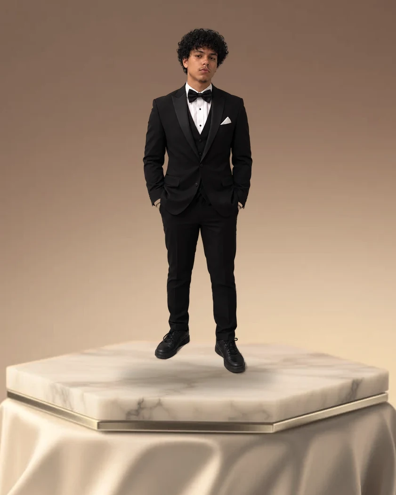
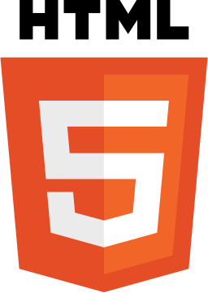
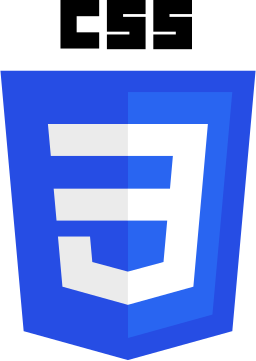
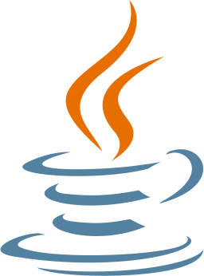
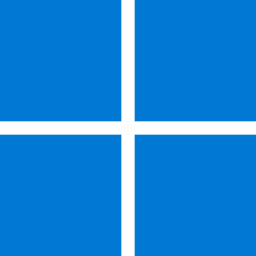
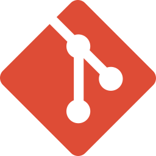
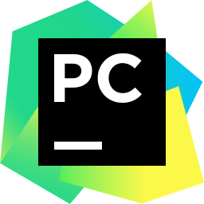
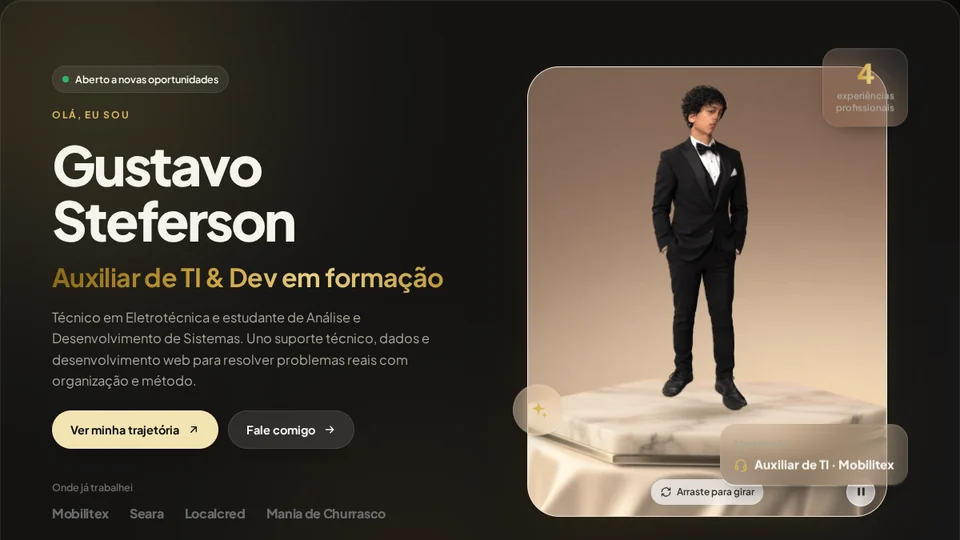

Suporte de TI
Atendimento aos usuários, Windows 10 e 11, manutenção de computadores e apoio à rede.
Olá, eu sou
Auxiliar de TI & Dev em formação
Técnico em Eletrotécnica e estudante de Análise e Desenvolvimento de Sistemas. Uno suporte técnico, dados e desenvolvimento web para resolver problemas reais com organização e método.
Onde já trabalhei

Arraste para girarSobre mim
Sou técnico em Eletrotécnica formado e estudante de Análise e Desenvolvimento de Sistemas. Hoje atuo como Auxiliar de TI na Mobilitex, cuidando do suporte técnico, dos computadores e da rede.
Já passei por logística, recuperação de crédito e atendimento — experiências que me deram base em operações, negociação e organização de dados. Tenho perfil analítico e organizado, gosto de planejamento e de processos bem documentados.
O que eu faço
Da manutenção de um computador a uma planilha que organiza a operação inteira.
Atendimento aos usuários, Windows 10 e 11, manutenção de computadores e apoio à rede.
Planilhas e relatórios no Excel e no Power BI para controlar e enxergar a operação.
Sites responsivos com HTML, CSS e JavaScript — como este portfólio.
Organização de dados, documentação técnica e cuidado com a LGPD.
Ferramentas & habilidades

HTML5 Básico
CSS3 Básico
Java Básico
Windows 10 e 11 Intermediário
Git Básico
PyCharm BásicoExperiência
Do meu primeiro emprego ao suporte de TI — cada etapa somou algo diferente.
Mobilitex · CLT · Presencial
Seara · Home Office
Ainda presto serviços para a Seara criando e mantendo planilhas.
Localcred · CLT · Presencial
Mania de Churrasco · Estágio
Projetos
Projeto em equipe · produto e negócio
Serviço contínuo · Excel

Formação
Base técnica em elétrica e, agora, desenvolvimento de sistemas.
Faculdade Flamingo · Em andamento
ETEC Jaraguá · Concluído
Hashtag Treinamentos
ConcluídoCurso em Vídeo — Gustavo Guanabara
Em andamentoEstudo contínuo
EstudandoHardware, sistemas e conectividade
EstudandoMeu método
O mesmo processo serve para um chamado de TI, uma planilha ou um site.
Escuto quem pediu e levanto o problema real e o contexto.
Estruturo dados, prioridades e prazos antes de agir.
Resolvo com a ferramenta certa — do Excel ao código.
Testo, confiro os dados e corrijo antes de entregar.
Registro tudo para o time e para a próxima vez.
Vamos conversar